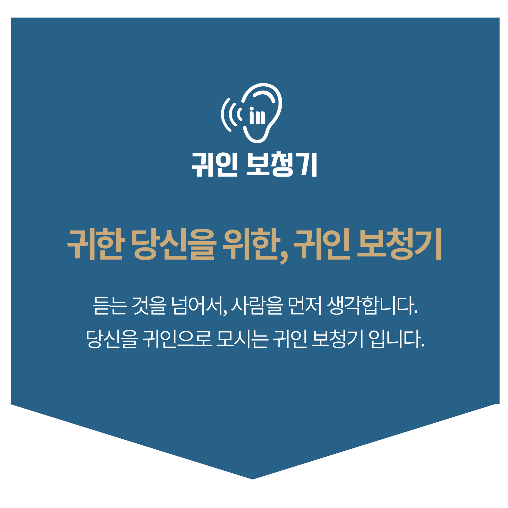
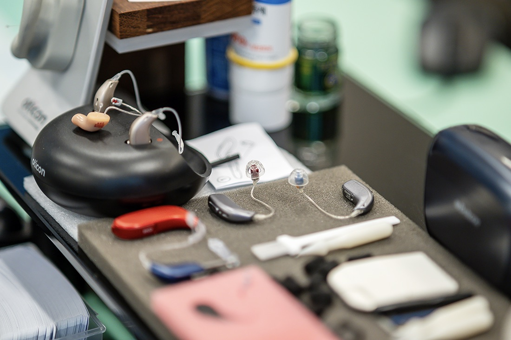
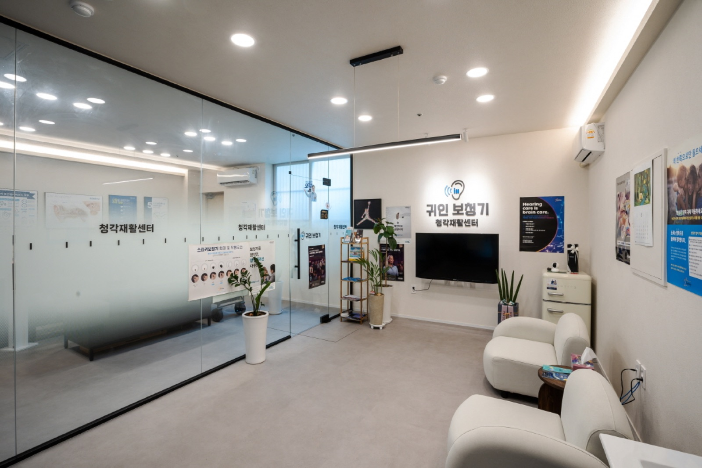
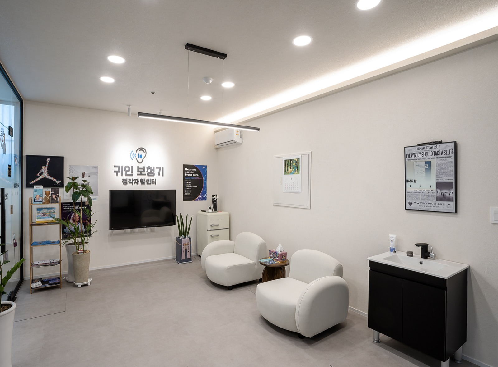
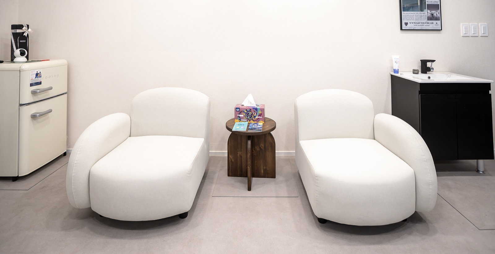
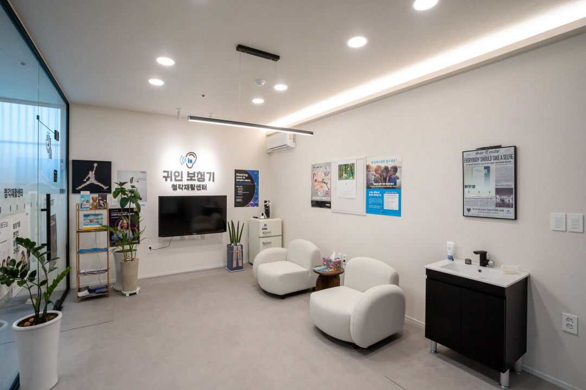
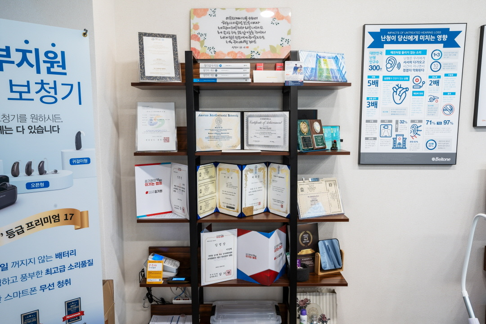
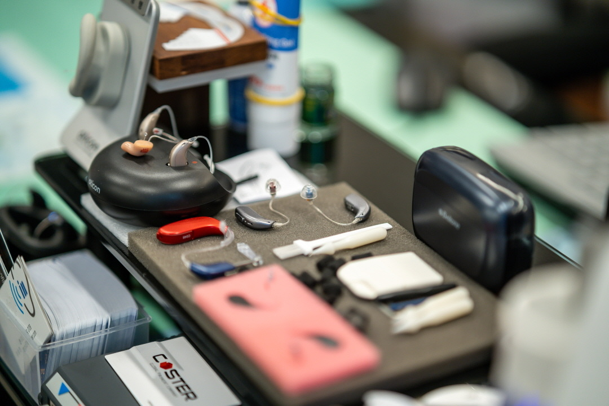

We care for every customer like family —
our certified audiologists listen closely to even the smallest discomfort, walking beside you all the way.
More than a simple consultation: our audiologists personally and thoroughly assess your hearing, daily environment, and readiness — to propose a realistic hearing-aid solution that truly fits you, one person at a time.
Receiving Korea's hearing-aid subsidy involves medical certificates, applications, and other complex administrative steps. Guiin Hearing walks first-time applicants through the entire process — from the first document to the final reimbursement — kindly and systematically.
A hearing aid is not a one-time purchase — it needs steady maintenance and ongoing support. After your purchase, we guide you through regular check-ups, cleaning and adjustments. Product warranty follows the manufacturer's warranty terms.

We believe a hearing aid is not just a device, but an important companion that changes your quality of life. We take time to deeply understand each customer's hearing and daily environment, and find the right direction together.
The first step may feel unfamiliar and complicated — but we will walk with you, sincerely, on the journey to rediscover the sounds that matter.
Meet our people →If you are registered with a hearing disability and enrolled in Korea's National Health Insurance (as a subscriber or dependent), you can receive the assistive-device benefit when you buy a hearing aid from a supplier registered with the National Health Insurance Service (NHIS). The standard amount for a hearing aid is ₩1,310,000 (5-year service life), and NHIS pays 90% of the standard amount or the actual price, whichever is lower (100% for certain near-poverty groups, 차상위). NHIS rule (Korean) · 5 steps to get the subsidy
For your exact amount, contact NHIS at 1577-1000 (foreign-language line 033-811-2000).
National Health Insurance hearing-aid prescriptions are issued by an ENT specialist of your own choice. After the prescription, hearing aids can be purchased from a provider registered with the National Health Insurance Service, and Guiin Hearing guides you through the purchase, inspection and benefit-claim paperwork from start to finish.
A warm hearing-rehabilitation space where certified audiologists personally guide you — from accurate consultation and careful fitting to steady after-care.
No exaggeration: just a comfortable, honest environment where even first-time visitors can feel at ease.






Jinhae Center
1F Unit 108, 999 Jinhae-daero,
Jinhae-gu, Changwon
Myeongji Service Center
Bldg. A Unit 1070, 99 Myeongji-gukje 6-ro,
Gangseo-gu, Busan
· 010-6599-0109
· 0507-1426-0116